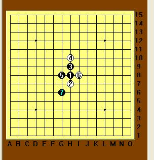
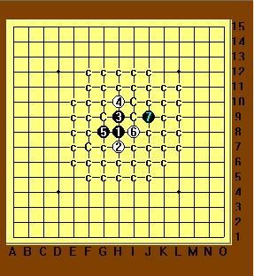
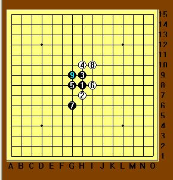
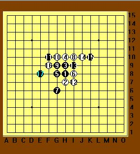

胡劼VS郑蔚楠
#1 胡劼VS郑蔚楠 作者：撒蓉儿 发表时间：2009-7-12 22:30:11
2009年七月虽然天气比较热，但仍无法抵挡棋手们对五子的狂热执着追求。第十届上海“友情杯”五子棋邀请赛于7月11日在古滇茶坊举行。
说到阿布大家都熟悉了吧，郑蔚楠（三段），2005年接触现代五子棋，上海第四代棋手。勤于思考，棋风朴实却不乏灵动，喜欢进攻，尤善在复杂局面下的局部攻杀。大局观和中盘作战能力及对未知局面应变分析的能力尚待加强。一口流利的日语，曾多次担任上海名人邀请赛等翻译工作。+这里我们要介绍下她的对手，一个默默为连珠事业贡献多年的老师---胡劼。曾在是在上海名人赛担当工作人员，现任中华连珠网的主要负责人和技术总监。大家一定会问，他负责五子后勤工作也会下棋吗？有时间研究棋吗？我也想知道！让我们一起看棋盘。

松月开局，胡劼执黑，一打。到这里我们有研究的朋友就会知道，松月一打其实黑必胜了。这个7是老定式，后来经过研究如果换个方向那么可以杀了，如图：

哈哈，不过既然是友情赛，那么友谊第一，联络增进彼此的感情和交流是目的。再说实战和网络毕竟不同，让我们回到实战上来。

8手档黑的活二，自己也做了两个活二。执黑9手显得胸有成竹。这里有个小小的陷阱，如果10手老老实实档档中间，那么发展下去局面黑并不优，后边为混战。可往往我们一般都会去贪，这里蔚楠也不例外。反三！大恶手！

阿劼心里一阵窃喜：骗到啦！11手一落，阿布一下傻了：活三必档，他一反，那么1和9.5.7G线因为13巧妙连接起来形成了43.哇，不妙，上当了！不该轻敌，米想到他这么厉害呢。12手无奈档了下边，（如档上边也迅速活三16位置追胜了）但于事无补。执黑者运筹帷幕，简单而漂亮的V了。
这盘棋虽然看似简单，但我们通过这盘棋明白一个道理，在对弈时，有的时候要主动出击，有的时候却不能贪眼前的小便宜，这个怎么拿捏分寸呢？那就需要大家凭借恒久对棋的真诚热爱，去理解一盘棋，观大局，分析先后手，知己固然重要，但知彼我们如放在第一位，那么我们要追赶本局执黑胡劼老师那样的决胜千里的棋力也就不远了。
（事后了解到比赛前大家都吃的面条，阿布一人吃的汤圆。她哭着告诉我：今天中午吃了酒酿圆子，然后就抱着一堆鸭蛋回家了，郁闷死了。）
［ 茗弈小刀 于 2009-7-12 22:36:23 时奖励此帖[金币加 20 威望加1］
［ 慎独 于 2009-7-13 13:43:36 时花20金币送鲜花一朵］
#2 Re:胡劼VS郑蔚楠 作者：吃大米饭的鱼 发表时间：2009-7-12 22:53:21
很好呀，学习了，是啊有时候不能贪的。#3 Re:胡劼VS郑蔚楠 作者：越狱行辕 发表时间：2009-7-13 1:01:25
此图来自QQ空间。。。看不见
#4 Re:胡劼VS郑蔚楠 作者：高星 发表时间：2009-7-13 8:42:04

|
吃大米饭的鱼
|
#5 Re:胡劼VS郑蔚楠 作者：黄药师 发表时间：2009-7-13 9:17:00
图看不到！#6 Re:胡劼VS郑蔚楠 作者：撒蓉儿 发表时间：2009-7-13 10:13:08
好了吧，我重传了一遍。#7 Re:胡劼VS郑蔚楠 作者：茗弈逐曰 发表时间：2009-7-13 12:51:14
学到了 比赛前吃面条#8 Re:胡劼VS郑蔚楠 作者：慎独 发表时间：2009-7-13 13:44:19
 亲爱的写的文章我要顶的。
亲爱的写的文章我要顶的。